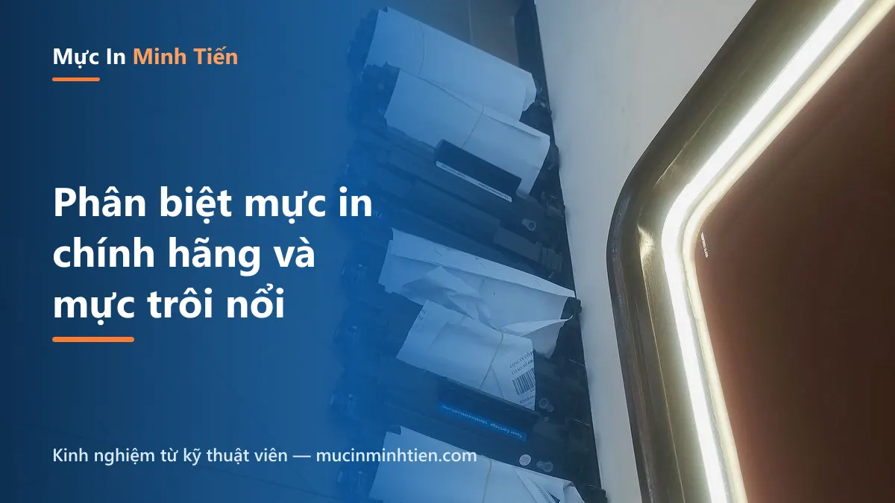
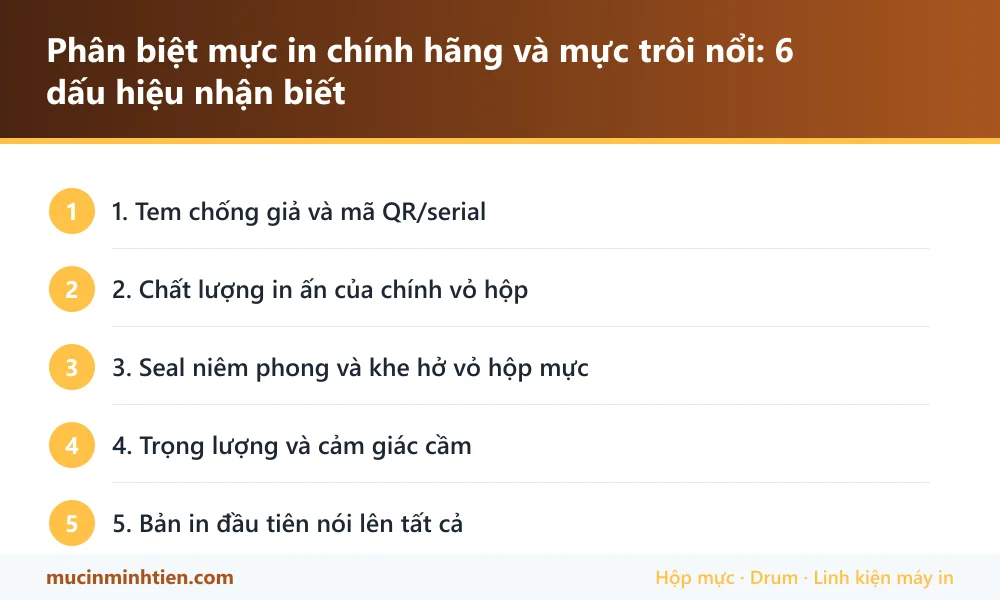

Phân biệt mực in chính hãng và mực trôi nổi: 6 dấu hiệu nhận biết

Mực in là mặt hàng bị làm giả nhiều bậc nhất ngành văn phòng: vỏ hộp nhái tinh vi, giá chỉ rẻ hơn chính hãng chút xíu để tạo cảm giác "được deal tốt". Người mua thiệt hai lần — trả giá gần chính hãng cho ruột mực kém, rồi trả tiếp tiền sửa máy. Đây là 6 dấu hiệu kỹ thuật viên chúng tôi dùng để nhận biết hằng ngày.
1. Tem chống giả và mã QR/serial
Hộp chính hãng HP, Canon, Brother, Epson đều có tem chống giả đổi màu theo góc nhìn (hologram) và mã QR/serial tra được trên website hãng. Hàng nhái: tem in phẳng không đổi màu, QR dẫn tới trang lạ hoặc không quét được, serial tra không ra. Mất 30 giây quét mã — đáng làm với mọi hộp mực tiền triệu.
2. Chất lượng in ấn của chính vỏ hộp
Nghe ngược đời nhưng chuẩn: hãng in vỏ hộp bằng công nghệ tốt — chữ sắc nét, màu đều, không lem mờ. Hộp nhái thường lộ: font hơi khác, màu nhợt hoặc đậm quá, chữ nhỏ bị vỡ nét, sai chính tả tiếng Anh. Đặt 2 hộp cạnh nhau là thấy ngay.
3. Seal niêm phong và khe hở vỏ hộp mực
- Hộp mực laser chính hãng có seal kéo niêm phong nguyên vẹn, kéo ra êm và liền mạch.
- Vỏ nhựa đúc chuẩn: các mép ghép khít, không bavia (gờ nhựa thừa), bản lề chắc.
- Hàng "đóng lại": seal ngắn hơn chuẩn, có vết keo dán lại, vỏ trầy xước dù "mới".
4. Trọng lượng và cảm giác cầm
Hộp mực chính hãng nạp đủ định lượng bột — cầm đầm tay. Hàng nhái hay ăn bớt: nhẹ hơn rõ, lắc nghe tiếng bột ít. Nếu có cân, so với thông số trên vỏ — lệch nhiều là đáng ngờ.
5. Bản in đầu tiên nói lên tất cả
In trang chữ + một ảnh xám: mực chuẩn cho chữ đen sắc, nền trắng sạch, chuyển xám mượt. Mực kém: nền xám bẩn, chữ bóng dầu, mùi khét nồng khi in, bột mực rơi lấm tấm trong máy sau vài chục trang. Thấy các dấu hiệu này — ngừng dùng sớm để cứu trống.
6. Giá bán "đẹp bất thường"
Hộp mực chính hãng có mặt bằng giá khá thống nhất giữa các đại lý. Nơi nào chào rẻ hơn 30-40% so với mặt bằng mà vẫn cam kết "chính hãng" — xác suất cao là hàng nhái hoặc hàng "luộc" (ruột nạp lại vỏ thật). Tham khảo mặt bằng giá thật tại bảng giá 780 mã của cửa hàng trước khi mua ở bất cứ đâu.
